There is no "last" hill
Sparwood to Cabin Pass
Leaving Sparwood after a quite night got two miles out when I realized I had left my map in the hotel room. This was the map I was supposed to be looking at on the top of my handle bars. I went back and found it beneath the blankets and went on my way.
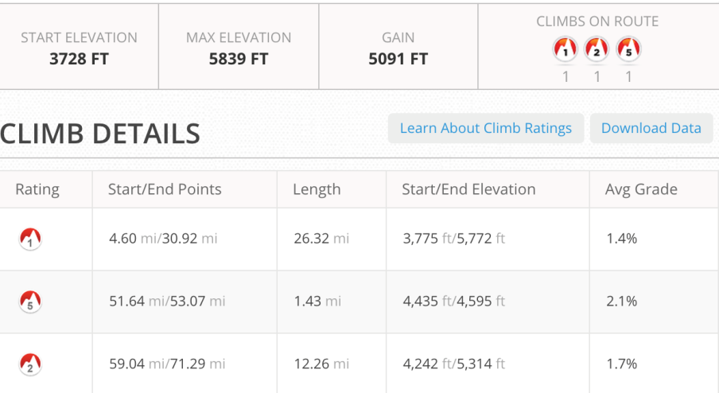

A mostly flat road but I was delayed crossing Michel Creek trying to figuring out where you turn onto
Corbin Rd.

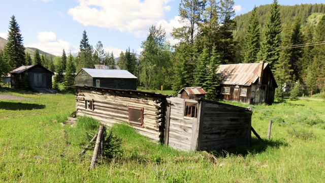
Corbin ghost town in East Kootenay Country.Went thru the old town and into a mining operation and then turned to go up to Flathead pass.
Flathead Pass
This was the day when most of the other racers began. It was also the first day when I wasn’t sure how far I would get. The first 14 miles were a gradual climb.
I started the day at 3,700 feet and I'm went up to 5,800 on the first pass.
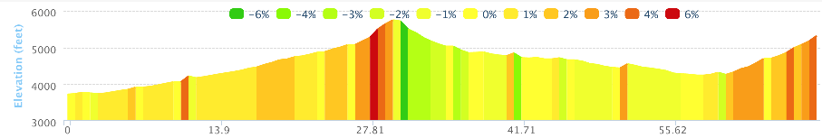

I learned that passes are not that scenic but it’s always nice to get over the top and down to the other side.
What I didn’t realize was that the other side of the pass was one of the more interesting trails of the trip. I started down the trail which ran along the river/stream and then the trail stopped.

Trail or Stream??
It took me 20 minutes to determine that the trail hadn’t stopped it had just merged with the stream. So after wading across the stream to look for the trail on the other side I realized I needed to follow the purple line on my Garmin and walked my bike down the stream/trail.
This is a picture from Friday later in the day when some of the other riders rode/hiked through.
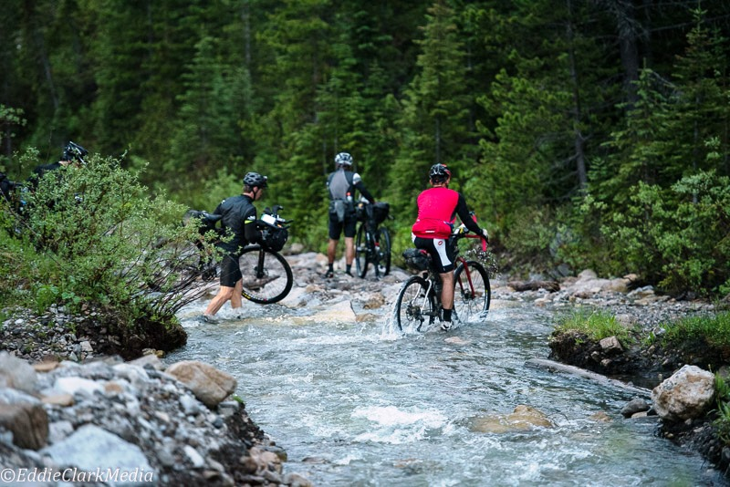
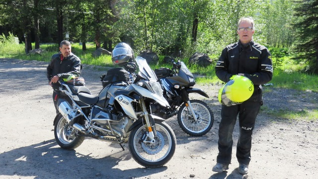
I met these two bikers on there way up the pass. I’m not sure how they navigated the stream.
The water in the road continued off and on until the river grew and finally we had a bridge to cross it. I stopped for lunch to let me shoes dry out.
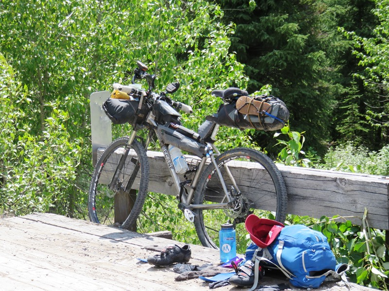
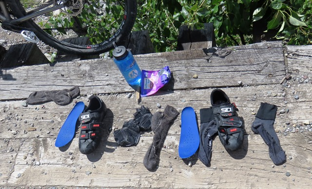
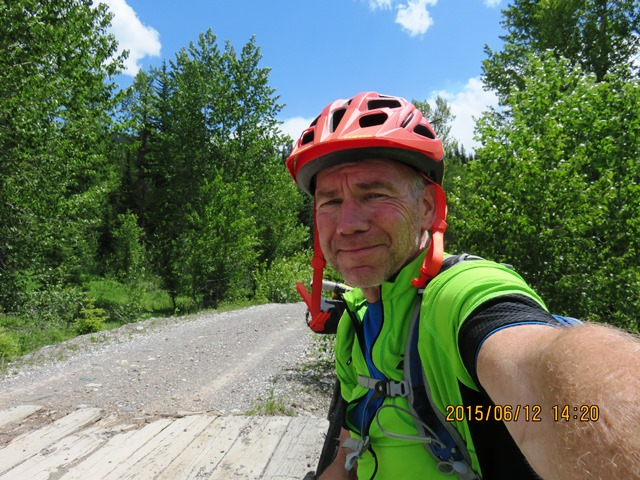
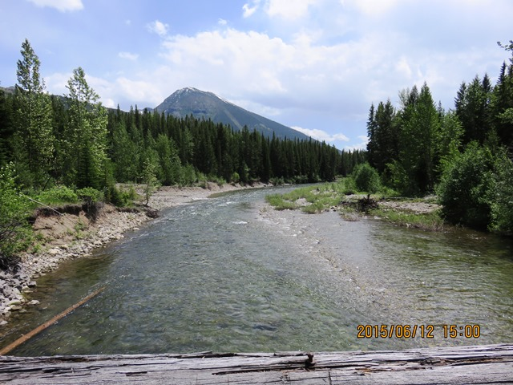
Butt's Cabin
Following this the trail was mostly flat and I arrived at a set of two small cabins (Butts cabin) on the flats. I was actually quite pleased that I had made it this far (68 miles) and so even though it was earlier I was looking to take a break.
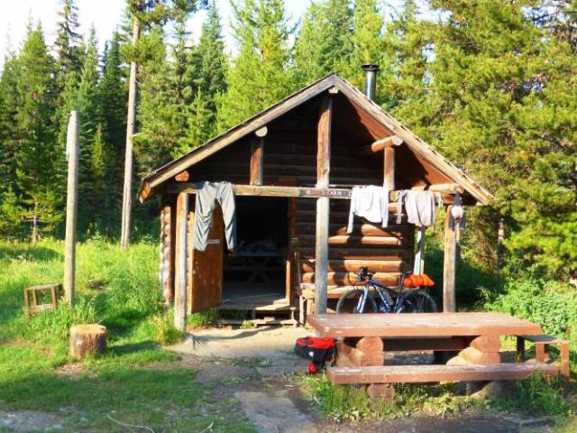
The cabins are first come/first serve and just pulling in to the “camping area” were three "bubba" type characters who had arrived in separate pickup trucks with dogs, coolers and guns. So I asked Bubba #1 if it was all right to sleep there. His response “Sure if you don’t mind that we’re going to be shooting off guns and blowing stuff up all night”
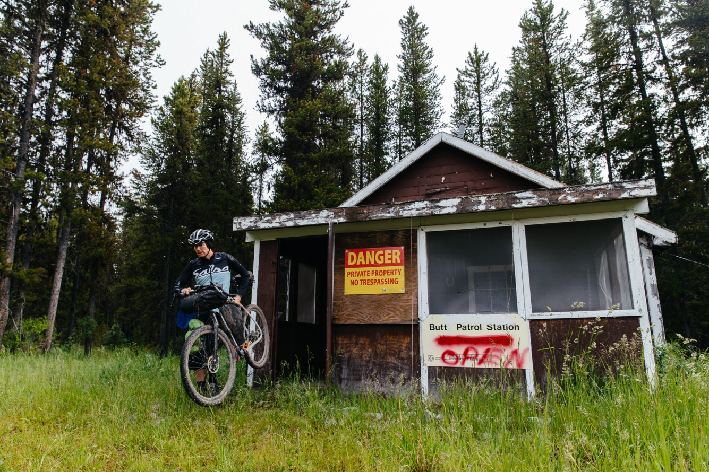
Even though it was threatening rain I decided to move on as far as I could from the three Deliverence rejects. It was only about 4pm but the 10 miles to Cabin Pass was a real grind. It started to rain three times and the third time I needed to get my tent up before it really started to rain.
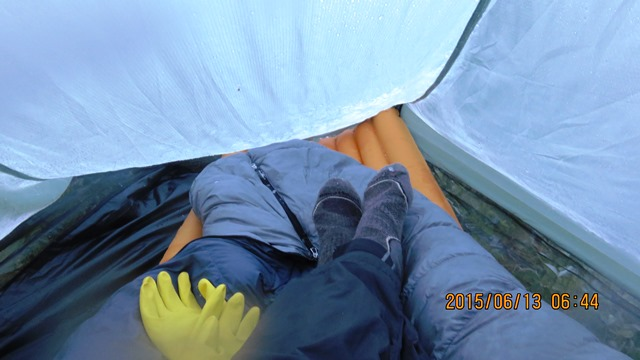
There was no real flat ground so I did the best I could and got it set up before the heavy rain came about
7pm. I slept until 11 and then ended up sliding down my mattress pad into a heap at the bottom of my tent.
Not so good.
So ended my fourth day on the road in Canada.
Text by Jim O'Brien.
Where noted photos by
theradavist.com.
Photographs by Jim O'Brien, see additional photos of the Tour Divide
on Flickr.